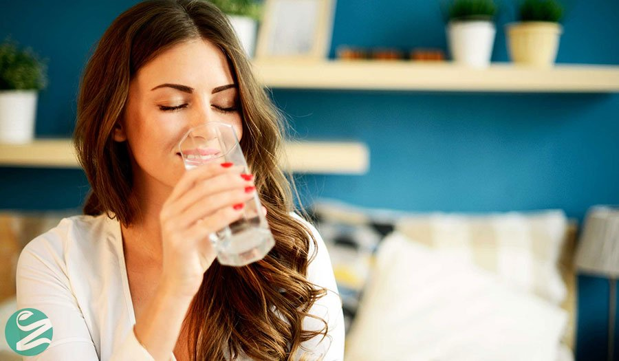
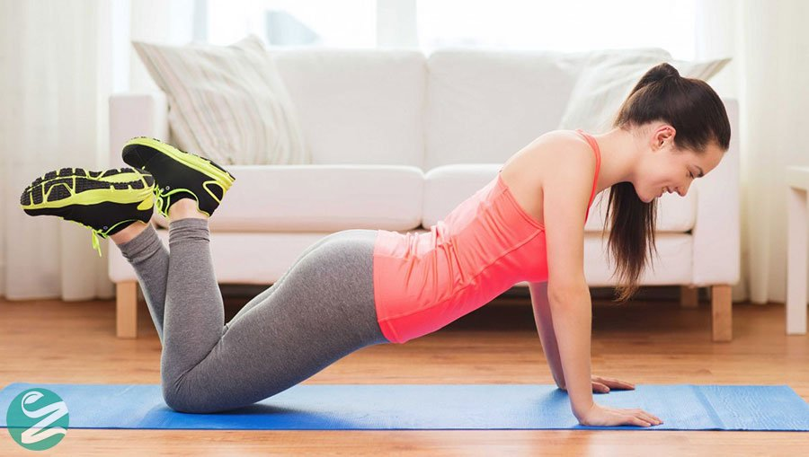
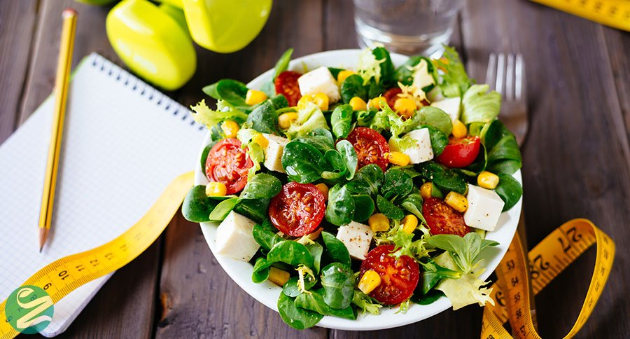
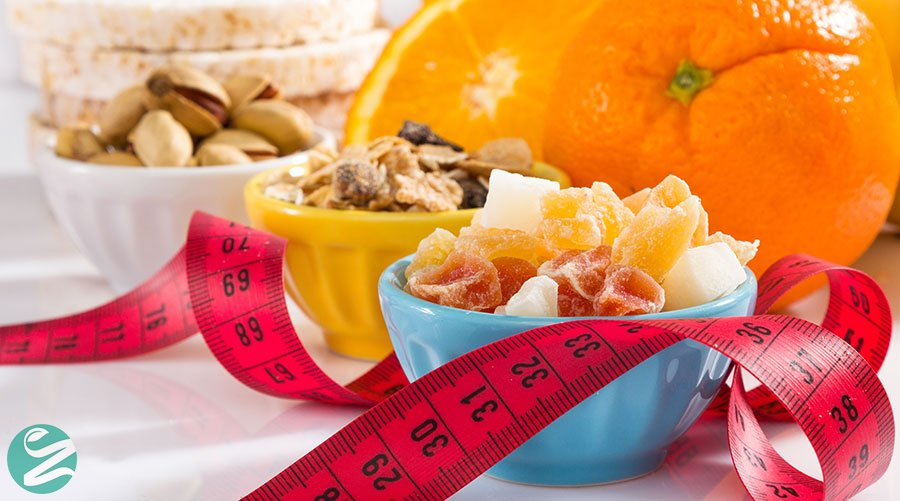
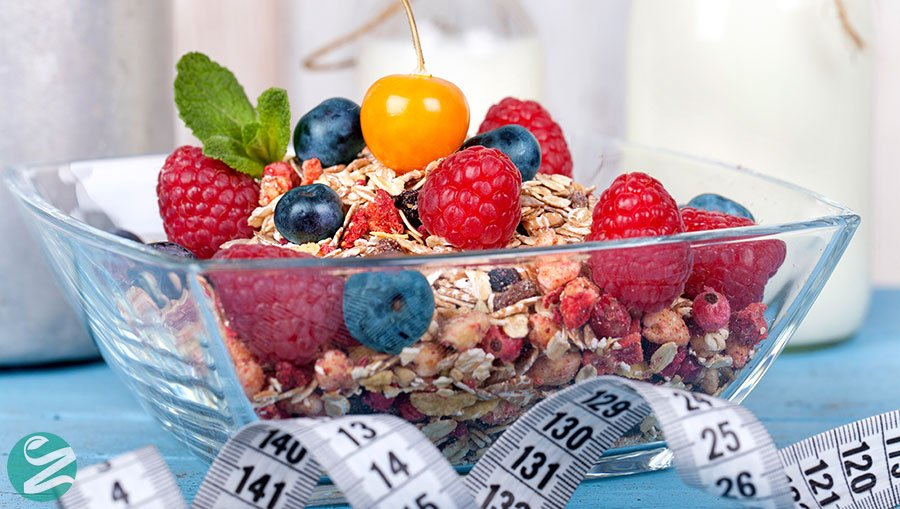

5 روش برای لاغر شدن و کاهش وزن در خانه
برای لاغر شدن همیشه نیاز به ثبت نام در باشگاه نیست! برای کاهش وزن در خانه می توانید از روش های مختلفی استفاده کنید. اگر می خواهید لاغر شوید اما مشلغه های کاری زیادی دارید باید سعی کنید در خانه برنامه کاهش وزن خود را ادامه دهید. در این مطلب از زوم لایف با 5 روش کاهش وزن در خانه آشنا شوید.
چگونه در خانه لاغر شویم؟
برای لاغر شدن در خانه باید نکاتی را رعایت کنید، در ادامه 5 روش برای لاغر شدن و کاهش وزن در خانه گفته شده است که پیشنهاد می کنیم با ما همراه باشید.

1. نوشیدن آب
اولین روش برای کاهش وزن در خانه، نوشیدن آب حداقل روزی هشت لیوان است. برای افزایش سرعت از دست دادن وزن و لاغر شدن باید روزی 2 لیتر و یا 8 لیوان آب بنوشید. نوشیدن آب سوخت و ساز بدن را افزایش می دهد و بر روی متابولیسم بدن تاثیر متثبی در جهت کاهش وزن سریع دارد.

2. ورزش ورزش ورزش!
در تمام مطالبی که برای کاهش وزن در زوم لایف منتشر شده، حداقل یکبار به موضوع اهمیت ورزش در کاهش وزن اشاره شده
است. کاربران زیادی در نظرات اعلام کردند که زمان برای انجام ورزش و یا رفتن به باشگاه ندارند!
اگر زمان برای رفتن به باشگاه و یا پیاده روی ندارید، در خانه و در زمان هایی که آزاد هستید ورزش کنید. در یک جمله،
کاهش وزن بدون ورزش کردن امکانپذیر نیست!
ورزش کردن علاوه بر سوزاندن چربی ها برای لاغر شدن تمامی اعضای بدن را در یک سطح آمادگی مناسب قرار می دهد و سلامت
بدن شما را تضمین می کند. اگر می خواهید لاغر شوید سعی کنید حداقل روزی 30 دقیقه در خانه ورزش کنید.

3. به میزان کالری غذاها توجه کنید
برای لاغر شدن در خانه باید به میزان کالری غذاهایی که می خورید توجه کنید. برای لاغر شدن ورزش می کنید تا کالری
بسوزانید پس از طرف دیگر نباید کالری بیشتری بخورید!
در این شکی نیست که باید غذاهای مقوی و با حجم کم رو در وعده های غذایی داشته باشید اما باید به کالری لازم بدن هم
توجه کنید.
پیشنهاد می شود میزان کالری که دریافت می کنید را یادداشت کنید و بعد از هر هفته بررسی کنید که چه میزان کالری دریافت کرده اید و چه میزان کالری سوزانده اید.

4. میوه بخورید
میوه یک صبحانه لذیذ و یک میان وعده سبک است. متخصصین تغذیه توصیه می کنند صبح ها و در میان وعده ها از میوه های
تازه استفاده شود. میوه کم ضررترین خوردنی ممکن برای کاهش وزن و لاغری است و توسط متخصصین تغذیه همیشه توصیه شده
است.
برای لاغر شدن سعی کنید میوه های تازه و طبیعی بخورید زیرا میوه ها ویتامین های لازم بدن را تامین می کنند.

5. غذاهای مغذی بخورید
متخصصین تغذیه توصیه می کنند که به هیچ وجه غذاهای با انرژی و کالری بالا را از وعده های غذایی حذف نکنید. همانطور که در گزینه سوم گفته شد، برای لاغر شدن باید به میزان کالری غذاها توجه کنید. پس غذاهای مغذی را حذف نکنید فقط آنها را با خوردنی های مفیدتر متعادل و یا در اصطلاح بالانس کنید.